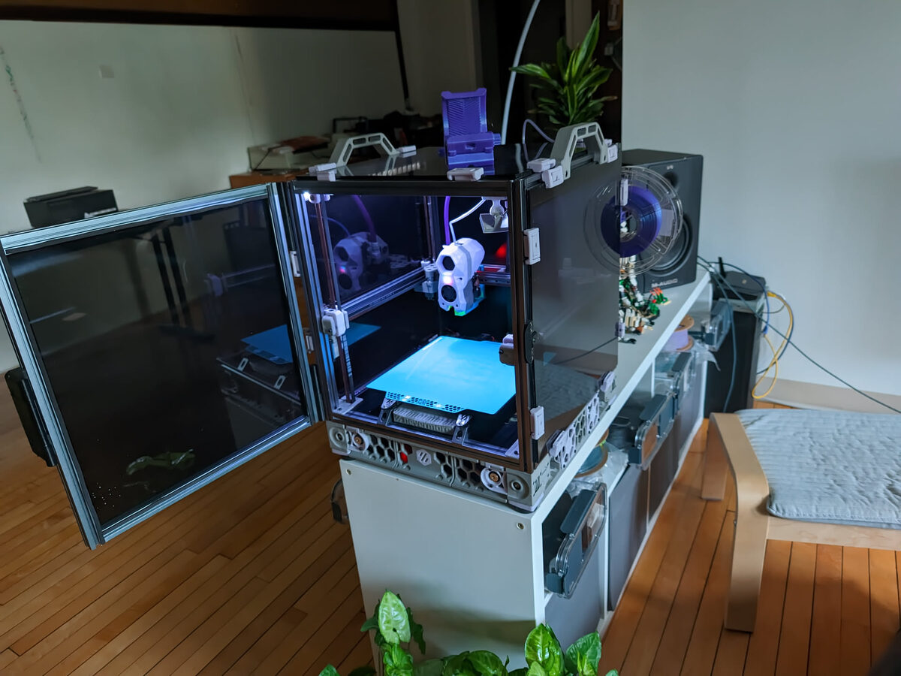
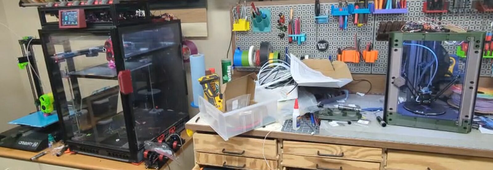

Maker Lab · Session 01
Intro to Slicing & Printing
From a digital idea to an object you can hold: how 3D models become 3D prints.
Course Introduction
About Me · Paul Jacobson
General nerd, from 3D printing to climbing.


What This Course Covers
Five stops between an idea and a finished print.
- Metaphysical → PhysicalHow a 3D model becomes a real object.
- What is a 3D model?Digital files that encode shape.
- What is a 3D printer?FDM, resin, and a little history.
- What is a slicer?The software between model and machine.
- Slicing & printer timeLive demo, start to finish.
“A 3D printer is just a very patient, very precise hot glue gun.” — you, in about 30 minutes
Metaphysical → Physical
Three stages turn an idea into an object.
3D Model
A digital file describing a shape in space
Slicer
Turns the shape into layer-by-layer instructions
Printing
The printer follows those instructions, layer by layer
Everything in this course lives inside one of these three boxes.
What Is a 3D Model?
A digital file that encodes a shape in three dimensions.
A 3D model is data, not an object yet: coordinates, surfaces, and volume, stored in a file format the next tool in the pipeline can read.
File formats that matter here
- STL
- The universal print format: a mesh of triangles, nothing else
- 3MF
- Modern successor to STL; adds color, materials, print settings
- OBJ
- Mesh format that can carry textures and color
How they're created
CAD / parametric modeling: designing with numbers and math.
Get models instead of making them
Free & paid libraries, e.g. printables.com
Activity
What Do We Want to Print?
Head to printables.com and pick one model as a class. We'll carry it through the whole pipeline: model → slicer → print.
- Keep it simple
- No supports needed (ideally)
- Something we can print today
What Is a 3D Printer?
A device that pulls a digital model out of the computer and into the physical world.
Computer
3D model file
3D Printer
Reads instructions, moves in 3 axes
Physical Part
Built up layer by layer
A glimpse of history
Charles Hull patented stereolithography (SLA) in 1986, the first practical 3D printing process. Desktop FDM printing took off decades later once key patents expired.
Types you'll hear about
- FDM: melts filament, layer by layer
- Resin (SLA/DLP/MSLA): cures liquid resin with light
- …and a few more we'll touch on later
FDM vs. Resin
The two printer types you'll meet most often.
FDM
Fused Deposition Modeling
- Melts plastic filament through a nozzle
- Draws each layer like a hot glue gun
- Cheap, sturdy, easy to maintain
- Lower detail, visible layer lines
Resin
SLA / DLP / MSLA
- Cures liquid resin with light, layer by layer
- Excellent fine detail and smooth surfaces
- Prints need washing + UV curing after
- Messier; resin is toxic uncured
What Is a Slicer?
The software that turns a shape into instructions a printer can follow.
An FDM printer is basically a glorified hot glue gun mounted on a computer-controlled arm.
So how do you turn a shape into instructions for that arm? First you slice the model into thin horizontal layers. Then, layer by layer, you trace the outline and fill it in. Repeat until the model is complete.
It Does More Than Just Slice
Supports, cooling, temperature, speed: lots of dials for a complex output.
(also: supports, cooling, extrusion temperature, extrusion rate…)
Many different slicers exist, open-source and commercial, each with its own history and reputation. You'll develop opinions fast.
Slicers produce G-code
Plain-text commands that drive the printer like a CNC machine:
G28 ; home all axes
M104 S210 ; set nozzle temp
G1 X50 Y50 F3000 ; move into position
G1 X80 E12 ; extrude while moving
G1 Z0.2 ; move up one layerEvery move, every temperature, every extrusion, spelled out one line at a time.
Slicing Time & Printer Time
Live demo: from our chosen model to a running print.
First-time setup
Select printer type
Select filament
Add model
Slice
Transfer file
Print!
We'll load the model we picked earlier, walk through each step live, and send it to the printer by the end of class.
Keep learning
Resources
Next class: we print the model we picked today. Bring questions.